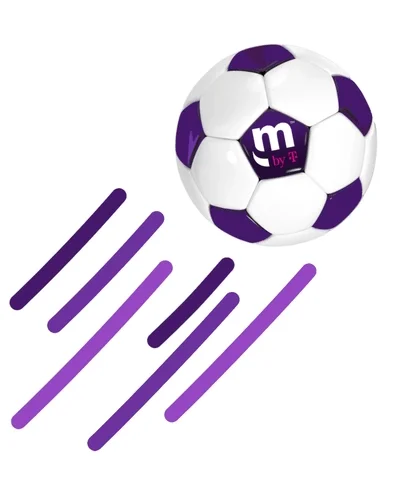
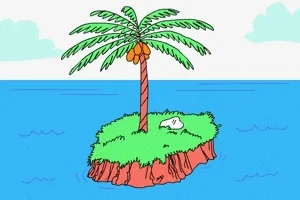

À PROPOS DE MOI
J'ai 23 ans je suis en Master Marketing digital, je suis quelqu'un de drôle et sociable vous en apprendrez plus sur mes passions en bas
MES PASSSIONS
Je suis un grand fan de football, d'échecs, et d'aviation
Plus jeune, j'avais comme passion de jouer au bandit avec mon frère mais la police me recherche toujours comme vous pouvez le voir les sirènes retentissent
MES EXPERIENCES
J'ai vécu 2 ans au mexique je suis devenu bilingue espagnol ce qui m'a beaucoup aidé dans mes voyages et mes recherches d'expériences professionnels
